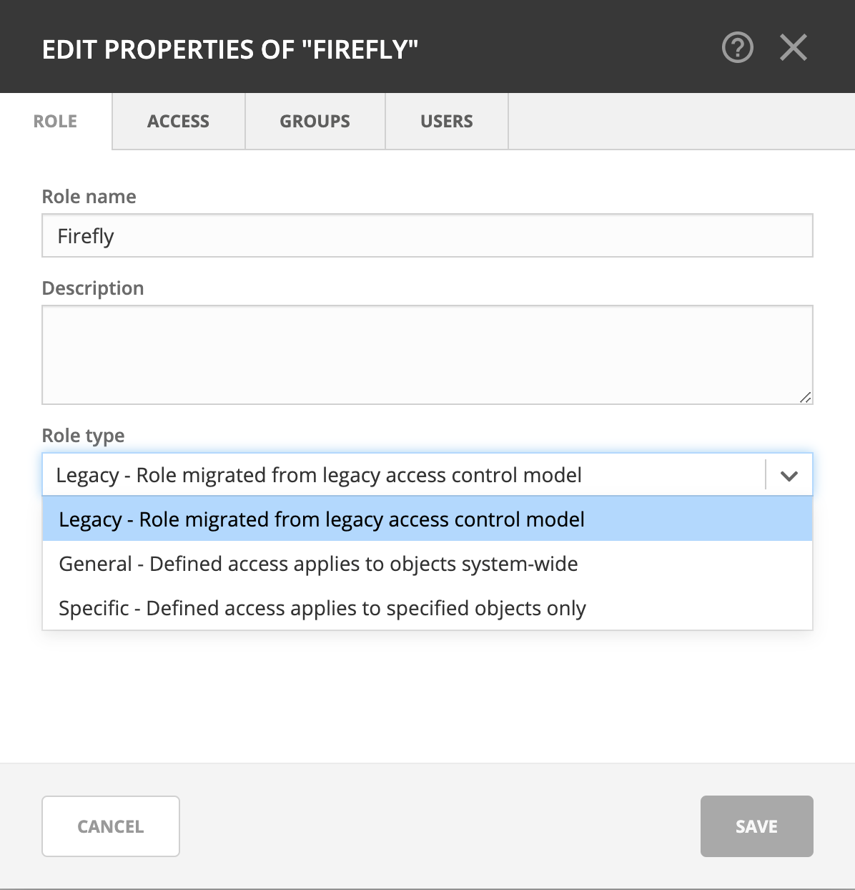
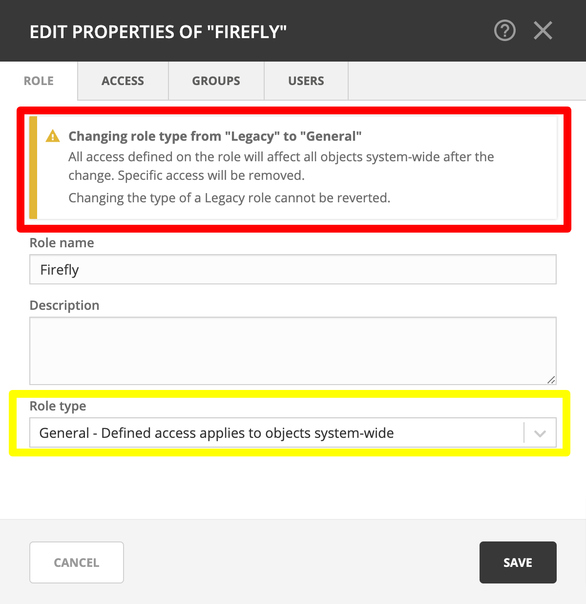
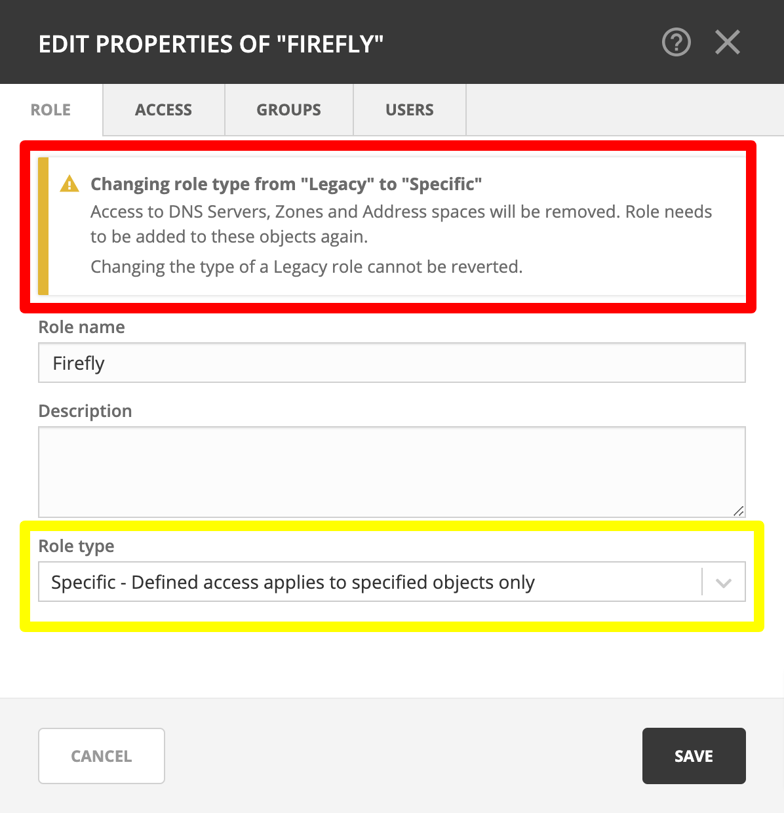

Converting existing access control configurations in Micetro 10.1
Micetro 10.1 updated access control management from an object-based to a role-based model. This page is intended to provide a recommendation for handling access controls in existing environments.
Upgrading to Micetro 10.1
Important
Men&Mice recommends performing a database backup before updating to 10.1.
Environments using a version of Micetro prior to 10.1 will be converted to the new model when you upgrade your Micetro components (see Update Guide). The database is migrated automatically. All existing access control configuration is preserved, but will use the new model:
built-in roles are converted into their new General roles equivalents
custom roles previously used for access control are converted into Legacy roles
access settings for legacy roles on objects are preserved, using the Specific roles mechanism (i.e. configured on existing objects, and not applied automatically to new objects)
Automatically created Legacy roles
Legacy roles are a transitional role type to help migration and preserve backward compatibility.
Legacy roles are generated for any user or group previously configured with Initial access that had general access for an object type. The legacy roles have the same permissions as their initial access.
The generated legacy roles are named after their original name. E.g. the user Viola will become the legacy role Viola (converted user) while the group Illyria will become the legacy role Illyria (converted group).
Note
Creating legacy roles based on users and groups will leave the existing user and group intact, and automatically assigned to their respective legacy roles.
Converting Legacy roles
If needed, legacy roles can be converted into a general or specific role, using the dropdown in the Edit role properties action.
{kind=link}
Danger
Changing the type of a legacy role cannot be reverted.
Converting legacy roles into General roles
Converting a legacy role into a general role removes all object-specific access and makes the legacy role’s configured permissions applicable to all objects in the system. If the legacy role had general access exclusions on specific objects, these exclusions are also removed.
{kind=link}
Converting to Specific roles
If the legacy role was general for some object types it will not have access to any of the objects of that type after converting to specific.
Any object-specific overrides will inherit the access from the role.
{kind=link}
Example of converting legacy role into specific
A legacy role had initial access on DNS servers previously (e.g. list/view) but not on zones, but was granted the role access to select zones.
After conversion:
the role will not have access to any servers (even if some servers had overridden/different permissions or were excluded)
the role will have access to the same zones as before, with consistent permissions across these zones
Note
Because of the complicated nature of matching access controls between the old and new models, Men&Mice recommends re-creating the configuration of legacy roles as specific roles, instead of changing the type.